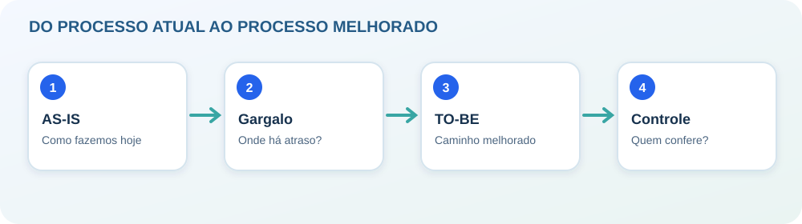

O caminho de uma solicitação
Um cliente pergunta o horário da cafeteria. A equipe lê a mensagem, procura a informação, responde e registra o atendimento.
O que observar: Essa sequência de ações é um processo de trabalho.
Desenhar fluxos com gatilho, ação, conferência humana e resultado.
Automatize depois de compreender o processo.
Campainha e gatilho: o fluxo só começa quando algo acontece.
Um cliente pergunta o horário da cafeteria. A equipe lê a mensagem, procura a informação, responde e registra o atendimento.
O que observar: Essa sequência de ações é um processo de trabalho.
Para fazer um bolo, não basta ter os ingredientes. A ordem dos passos importa. Na empresa também: mudar um passo pode afetar os seguintes.
O que observar: Antes de automatizar, é preciso entender como funciona hoje e onde ocorre a demora.
Descreva as etapas atuais e peça uma versão mais simples, ainda com conferência humana quando necessária.
O que observar: Não permita que a proposta pule verificações importantes, como confirmar horário ou disponibilidade.
A IA pode sugerir uma resposta, mas isso não quer dizer que ela esteja conectada ao WhatsApp ou enviando mensagens sozinha.
O que observar: A ação automática só acontece se existir uma ferramenta configurada para isso.
Uma marmitaria recebe pedidos, confere disponibilidade, calcula preço e confirma entrega. Qual etapa deve continuar exigindo conferência?
O que observar: Seu processo melhorado preserva a verificação de disponibilidade?

Formulário com 5 pedidos fictícios, planilha, Gemini classifica e rascunha, humano confere. Opcional: mostrar o mesmo fluxo no Make, Zapier ou n8n.
Qual passo você nunca automatizaria sem conferência?
Próxima: dados, segurança e ética.
Biblioteca de prompts · Fontes e recursos · Mapa de oportunidades